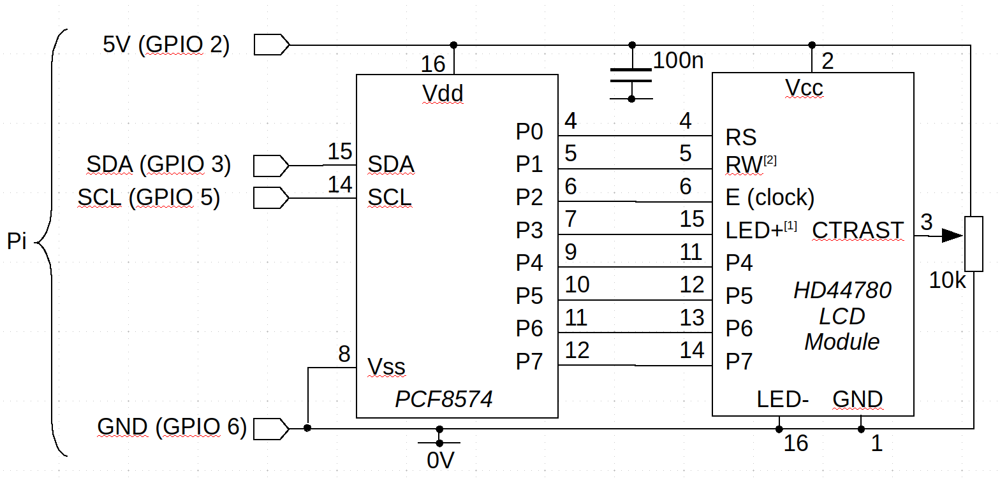

Using an HD44780 LCD display module with the Raspberry Pi, from the ground up

In this article I explain how to construct, and program in C, an I2C interface to the popular HD44780 LCD display for the Raspberry Pi. Between this article and the accompanying source code, no technical details are concealed: I present the complete hardware design and every line of C code needed to operate it. The HD44780 display has been around since the 90's, and is available in a number of different sizes. The interface and its supporting code should work for any display size, perhaps with some minor changes.
Note:
I also have a article on interfacing the HD44780 to an Arduino using a similar method here.
The HD44780 module uses a rather peculiar parallel interface, with eight data lines and a bunch of control lines. It's possible to connect the module directly to the Pi's GPIO pins, and this simplifies the programming a lot. However, the Pi doesn't have enough GPIO pins to justify using most of them for one single device. And, frankly, the LCD display doesn't accept data quickly enough to need parallel connection to the controller -- although that might not have been true when it was introduced thirty years ago.
Therefore, in this article I use a PCF8574 I2C-to parallel converter to provide the interface between the Pi and the LCD module. An alternative would be the shift register technique I described in another article.
The combination of the PCF8574 and HD44780 is a very popular one, and ready-built modules are available in the UK for £5-10. The code I describe would almost certainly work for a ready-built module, but you'd need to make small modifications according to how the PCF8574 and HD44780 are wired together. However, a suitable circuit is really not difficult to construct. The PCF8574 is available in tradtional 16-bit DIP format, so it can be assmebled on a conventional through-hole PCB or stripboard. The PCF7475 and the LCD module will both happily run on 5V, but work with 3V I2C levels, so the whole circuit only needs four connections to the Pi -- 5V supply, ground, and the two I2C lines.
Connecting a Pi to an LCD module via an I2C-to-parallel converter is an interesting interfacing challenge, because it involves writing sequential bytes of data to the I2C controller, to change specific bits on the LCD controller's interface, as we shall see. Nearly all the complexity in the software follows from this design feature.
If you buy a ready-made module, it will probably come with some software, which will likely be completely opaque. Most likely it will rely on libraries, which may or may not be readily available. If there is complete source code, it will likely by ugly and undocumented. Constructing and programming your own display is not only educational, in a way that using a ready-built one is not -- you will be able to make it work exactly as you require.
The application I will be using for demonstration purposes simply writes a running display of time and date on a 2x16 display. I will be showing only snippets of code from this application; the full source is available in my GitHub repository.
I'm using C because there's no place to hide -- the detailed operation is clearly visible.
Basic principle
The PCF8574 has eight output pins that can be set to whatever values are required, by writing a byte of data to the I2C interface to which it is connected. Using a single PCF8574 we can't drive the LCD module in its 8-bit mode, because we would need eight data lines and some control lines. There aren't enough outputs on the PCF8574 to go around.
So it's fortunate that LCD module has a 4-bit mode, that requires only four data lines, plus two compulsory control lines, and a couple of optional control lines. This totals eight lines, which fits neatly with the PCF8574's eight outputs.
For completeness, I should point out that the PCF8574 can also be programmed to use its data pins as inputs. This is potentially useful, because the LCD module can actually be read. My code doesn't actually read from it, but there are applications where it might be useful to do so.
The two compulsory control lines on the LCD module are "E" ("enable", but more commonly called "clock" or "strobe"), and "RS" ("register select"). The clock line is used to clock in blocks of data or commands. The module expects the clock line to be pulsed high for at least a millisecond, and the data on the data lines is captured on the falling edge of the clock.
The "reigster select" line is used to indicate whether the controller is sending commands or character data. Each command is eight bits, so in 4-bit mode we have to send it in two 4-bit chunks. The same applies to character data, which is (sort of) extended ASCII.
So these six pins -- four data and two control -- must be connected to output pins on the PCF8574. The read/write line might be connected to an output pin but, in many applications, it could just be connected directly to ground (that is, held low to indicate a write operation). The other pin on the LCD module that might be useful is for the backlight LED. Since the LCD module is essentially useless without the backlight, we might as well connect the LED directly to the supply (there is an internal current-limiting resistor). If you do connect the LED and read/write lines, you'll need to set the correct levels in software (which is slightly more fiddly than it ought to be -- see below).
The C (or whatever) program will send data to the I2C
device (usually /dev/i2c-1 on the Pi), and the PCF8574
will convert it to the appropriate state changes on the LCD module's
control and data lines. This is a non-trivial operation,
as I'll discuss later.
About the HD44780 LCD module
This LCD module is found in everything from refridgerators to photocopiers. Its operation is somewhat old-fashioned: if you're old enough to remember the archaic Centronics printer interface: it's a bit like that.
The module is available in a range of sizes, from (I believe) one row of eight characters, to two rows of sixteen. All the different sizes have exactly the same electrical interface, and are programmed in exactly the same way. Because the HD44780 is so popular, its interface has been copied by other manufacturers, and much larger displays are available with essentially the same hardware interface, programmed in essentially the same way.
The LCD module can be powered from a 3.3V supply, and signalled using 3V logic, although that probably isn't how it was designed to work back in the day. It has a backlight LED that is very bright, even on 3.3V. It might help to add some extra resistance to the backlight circuit. The backlight doesn't have to be used, but the module is basically unreadable without it.
The HD44780 is available in Japanese and European versions, which differ in their character sets -- the Japanese version has a Yen symbol, for example. The characters are represented as 8-bit values -- the usual ASCII characters plus a selection of characters from other European alphabets. To the best of my knowledge, the non-ASCII characters do not correspond to any standard character set. If you want to use the non-ASCII characters, you'll have to be prepared to map them from a more common character set (to the extent that this is possible).
Some of the characters in the character set are user-reprogrammable, to provide custom glyphs. However, these changes are non-persistent, so will have to be repeated every time the LCD module is powered up.
There is a data sheet in English, detailed scrutiny of which is, for better or worse, absolutely necessary. The module can be very quirky.
About the PCF8574
The PCF8574 is a simple (at least for the constructor) I2C-to-parallel converter with 8 data lines. Essentially, it's a shift register driven by an I2C interface. The data lines can be set as inputs or outputs; in this example I only use them as outputs.
The datasheet is here but, in fact, operation is perfectly straightforward. Setting the eight data lines to particular values in C code requires nothing more than this:
int fd = open ("/dev/i2c-1", O_WRONLY);
// Set the I2C slave address
ioctl (fd, I2C_SLAVE, MY_I2C_ADDRESS);
BYTE c = // Outputs to set...
write (fd, &c, 1);
The PCF8574 has an I2C address range from 0x20 to 0x27 --
the specific value is set by pulling three address pins on the
IC high or low. If you're using a pre-built module, you can
probably find the address it is set to -- if it is not obvious
-- using the i2cdetect utility.
The circuit
Here is the complete circuit. Note that the decision about which output pins P0-P7 on the PCF8574 connect to which pins on the LCD module is completely arbitrary. P0-P7 are just general data outputs -- we'll need to take account in software of what is connected where. The pin assignments in the circuit match those in my example program, but I've tried to make it clear in the code where you'd defined different pin assignments.

Notes:
1. If you don't envisage a need to control the backlight from software, this
pin can be connected permanently to 3.3V, and the coding gets just a tiny bit
easier.
2. Most applications don't require reading from the LCD device. In that case,
this pin can be connected permanently to 0V. Again, this makes the coding a
fraction easier.
3. I haven't shown the address-setting pins, A0-A2 (pins 1-3). Pull
these high or low to set the desired I2C address.
Building this simple circuit isn't much of a challenge -- it's even less of a challenge if you buy a ready-made one, but the connections between the LCD module and the driver IC might be awkward to discern (and are unlikely to be documented).
The potentiometer for controlling the display contrast is probably not optional, and it probably needs to be user-accessible. Of course, you could connect this input to the output of a digital-to-analogue converter rather than providing manual control.
Serial control of a parallel interface -- the basic problem
With the hardware design out of the way, let's turn to the software.
The HD44780 actually has a very simple parallel control protocol -- particularly if operated in 8-bit mode. All the commands are defined as 8-bit words, and the module accepts 8-bit ASCII (sort of) characters. In principle, forming and sending a command byte amounts to the following steps:
1. Set the register select pin low, to indicate that a command follows.
2. Put the 8-bit command on the 8 data lines of the module.
2. Pulse the clock line high for a millisecond.
3. Go to (2) until all commands have been sent.
There really isn't any more to it than that, although the commands themselves are a little awkward in their format. For sending character data, rather than commands, the sequence is the same, except that the register select pin is set high.
In 4-bit mode, it's a little more complicated, but only to the extent that each 8-bit command byte must be split into two chunks of four bits, and sent one after another (high bits first). The register select pin stays low for a command, or high for data, throughout the sequence, and each 4-bit chunk gets it's own pulse of the clock pin.The problem with interfacing using the serial I2C protocol is that we must set all eight outputs of the converter chip at once even if we only want to change on pin on the LCD module. So, consider the process of pulsing the clock line. That's very simple with a parallel interface, but with a serial interface we can't just change the clock line -- we have to set all eight outputs of the converter at once. That is, we have to set the eight outputs with the clock bit low, then set the same eight outputs with the clock bit high, then set the same eight outputs with the clock bit low again. And we have to do all this twice -- once for each 4-bit data block -- in 4-bit mode.
So the simple parallel protocol turns into this rather more complicated
sequence of serial operations (in 4-bit mode). This sequence is
implemented in the function lcd8574_send_byte() in
the file lcd8574.c. This method calls a method
lcd8574_send_4_bits() twice, so send each four-bit data
block.
1. Set a byte variable, the bits of which represent the
correct values of the register select line (and perhaps the
read/write line, if we're using that).
2. Combine this byte, using logical OR, with the upper four bits
of the command or data word, with the bits in the correct places
in the byte.
3. Ensure that the bit that represents the clock line is set low
(it might already be low).
4. Send this newly-formed byte to the I2C device
4. Wait a millisecond.
5. Keeping the other bits in the byte variable as they are,
set the bit that corresponds to the clock line high.
6. Send this byte to the I2 device.
7. Wait a millisecond.
5. Keeping the other bits in the byte variable as they are,
set the bit that corresponds to the clock line low.
6. Send this byte to the I2 device.
7. Wait a millisecond.
8. Replace in the byte variable the four bits that represented the
upper four bits of the command or data word, with the lower four bits.
9. Keeping the other bits in the byte variable as they are,
set the bit that corresponds to the clock line high.
10. Send this byte to the I2C device.
11. Wait a millisecond.
12. Keeping the other bits in the byte variable as they are,
set the bit that corresponds to the clock line low.
13. Send this byte to the I2C device.
14. Wait a millisecond.
This is all awkward enough, but the situation is made even more awkward because the output pins of the I2C converter might not not all be concerned with the communication protocol. Suppose, for example, we're using one of the outputs to control the LED backlight. That output is independent of the communications protocol, and must maintain whatever high/low state it has, throughout all other interactions.
Basic software control of the LCD module
The HD44780 has write and read modes, but my sample application doesn't read. Writes are of two kinds -- commands and data. In practice, most of the commands have data mixed in with them -- but not character data. "Data" here refers to ASCII (sort-of) characters.
Using the protocol described above, we can implement a function for sending commands or data in 8-bit blocks (see the full source code for implementation details). This function is defined in outline as follows:
void lcd8574_send_byte (int register_sel, BYTE value)
{
// register_sel: 0 = command, 1 = character data
// value: 8-bit command or character
}
With this function in place, the simplest commands are of this form:
#define CMD_CLEAR 0x01 #define CMD_HOME 0x02 #define CMD_CTRL 0x08 #define LCD_MODE_DISPLAY_ON 0x04 // Clear the display completely lcd8574_send_byte (0, CMD_CLEAR); // Turn the display on lcd8574_send_byte (0, CMD_CTRL | LCD_MODE_DISPLAY_ON); // ... // Move the cursor to the top-left lcd8574_send_byte (self, 0, CMD_HOME);
You'll need to refer to the datasheet to see exactly what commands
are available, and how they should be encoded.
Note that CMD_CTRL is an example of a command that
has data -- in this case the display mode -- embedded in the
command byte.
Writing a character to the display is very simple:
lcd8574_send_byte (1, 'A');
But where is the character written? The SET_DDRAM_ADDR command is used to control this. Thie command byte has a '1' in its most significant bit, and the 'address' in display memory in the lower 7 bits. A row in the display memory is 64 bytes long, regardless of the display size. So the second row of characters begins at address 64. Here's how to set the text position to a specific row and column:
#define CMD_SET_DDRAM_ADDR 0x80 #define LCD_CHARS_PER_ROW 64 row = ...; col =...; int addr = row * LCD_CHARS_PER_ROW + col; lcd8574_send_byte (self, 0, CMD_SET_DDRAM_ADDR | addr);
Remember that these calls to lcd8574_send_byte() bring about
the lengthy sequence of actions I described above, that send the
byte as 4-bit blocks, strobing the clock line between each block.
The HD44780 has a notion of a text cursor, and it is that which is being positioned when changing the address. Characters written without a preceding address-setting operation are written at the cursor position which (by default) is incremented. However, cursor control is pretty crude and, although my source code example shows how to control the cursor and alludes to its various modes of operation, I'd envisage that the application developer would probably want to take charge of that aspect of operation.
Closing remarks
That wasn't so bad, was it? Using an I2C interface with a serial-to-parallel converter is a useful technique for interfacing a microcontroller, which probably has a limited number of I/O pins. Apart from the increased software complexity, the disadvantage of this interfacing method is the reduced speed -- we're sending an awful lot of serial data, to make a small number of changes to the parallel interface.